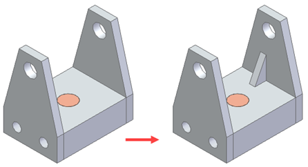
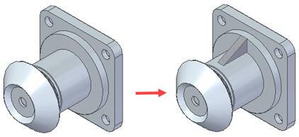
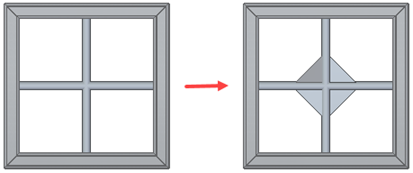
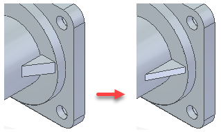
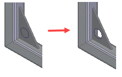
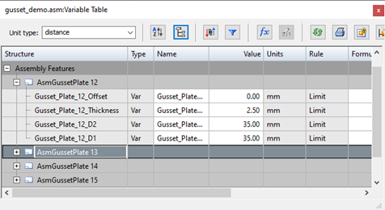

Gusset Plate command
Use the Gusset Plate command to create gussets on the faces of selected assembly components.
These gusset plates provide reinforcement for components that are either bolted or welded together. While gusset plates are used mainly in frame structures, they can also be used in general assemblies on any type of component.
You can create the plate between planar faces,

a cylindrical face and a planar face,

or between cylindrical faces.

If both faces are cylindrical and they intersect each other, the gussets are placed based on where you click the face.
The gusset plates are created as internal components so it is an assembly embedded document and no file is created on disk.
The gusset plates are associative to the selected faces and update if changes are made to those faces.
Editing gusset plates
Use the Edit Definition command to change such things as the faces selected, alignment, and gusset parameters.

Workflow for creating a gusset within an assembly
-
Choose Home tab→Components group→Create In-Place list→Gusset Plate.
-
On the Gusset Plate Options dialog box, use the options to customize the gusset, and then click OK.
-
Click the two faces on which you want to create the gusset and then click Accept.
You can select only a pair of planar and cylindrical faces.
-
Define the alignment of the gusset and click Accept.
The options available to define the alignment are different, depending on your selections.
-
Click Finish.
Assembly reports and parts lists containing gussets
Because gussets are embedded documents like tubes, pipes, and frames, you must specify their uniqueness criteria to populate a parts list or BOM.
Use the Options tab on the Parts List Property dialog box to define the unique criteria for the gusset. You can use Mass as a unique criteria, along with gusset parameters, such as Thickness and Material.
Because similar gussets are shown on a single row, you must specify the names of gussets in the row. To uniquely name the gussets, you can use a user-defined prefix, along with the Material and Thickness parameters.
For example, for a stainless steel triangular gusset of 1.97 x 1.38, with a 90 degree angle between d1 and d2 and a thickness of 0.10, the entry in the parts list would be:

If you leave the first field set to Gusset and set the second field to Number, the third and fourth are disabled and the entry in the parts list shows only Gusset appended by the gusset number.

The same unique criteria is added to the Item Numbers tab on the Solid Edge Options dialog box in assembly and you can see them in the assembly parts list or BOM.
Adding features to gussets
You can create assembly features, such as cutouts and chamfers, on gusset plates.

Gusset variables
The d1, d2, Thickness, and Offset are created as variables in the Variable Table.
The Structure View in the Variable Table displays the variables under Assembly Features.

How do I
Mirror an assembly featureConstruct a hole in an assembly
Construct a cutout feature in an assembly
Construct a revolved cutout in an assembly
Construct a round in an assembly
Select the parent elements of an assembly feature
Customize a gusset
Learn more
Assembly-based featuresLook up more details
Select Feature Components commandCutout command (Assembly environment)
Round command (Assembly environment)
Revolved Cutout command (Assembly environment)
Hole command (Assembly environment)
Mirror Assembly Feature command
Revolved Cutout command bar (Assembly environment)
Round command bar (Assembly environment)
Cutout command bar (Assembly environment)
Hole command bar (Assembly environment)
Mirror Assembly Feature command bar
Feature Options Dialog Box
Gusset Plate command bar